Hier sind die 120 neuesten von 121 Materialien. Alle im Material-Finder ansehen

Lesespaziergang Materialpaket: 3 Geschichten, 6-fach differenziert – Herbst, Advent, Winter (Klasse 1–4, DaZ)

Lesespaziergang Vögel am Futterhaus – 6-fach differenziert mit Bildkarten, Sternchenaufgaben und Audio (Klasse 1–4)

Lesespaziergang Auf dem Weihnachtsmarkt – 6-fach differenziert mit Bildkarten, Sternchenaufgaben und Audio (Klasse 1–4)

Lesespaziergang Ein Nebeltag im November – 6-fach differenziert mit Bildkarten, Sternchenaufgaben und Audio (Klasse 1–4)

Materialpaket Winter und Advent für die 4. Klasse: 5 Lesespurgeschichten mit Rätselaufgaben (Weihnachtsmarkt, Fröbelsterne, Sternbilder & mehr)
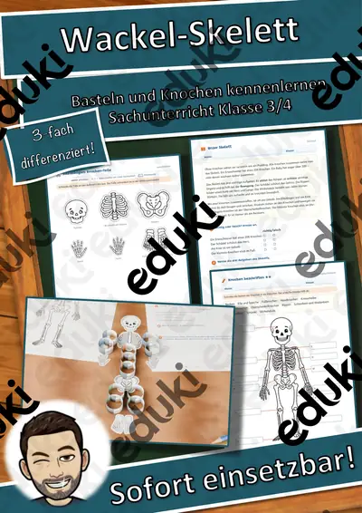
Halloween Wackel-Skelett – Bastelvorlage, Sachtext Skelett und Knochen beschriften, 3-fach differenziert (Klasse 3/4)
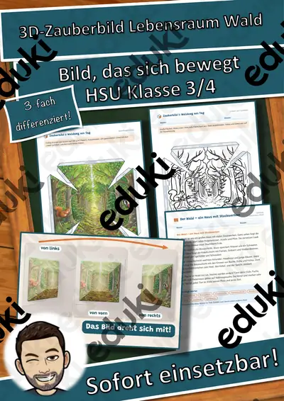
3D-Zauberbild Lebensraum Wald – Umkehrperspektive basteln, Sachtext und Forscherauftrag, 3-fach differenziert (Klasse 3/4)

Lesespaziergang: Frühblüher im Garten und im Wald – 3-fach differenziert (★/★★/★★★), Klasse 2–4

Lesespaziergang: Verkleiden und Feiern im Fasching – 3-fach differenziert (★/★★/★★★), Klasse 2–4

Lesespaziergang: Tiere in Eis und Wüste – 3-fach differenziert (★/★★/★★★), Klasse 2–4

Lesespaziergang: Obst und Gemüse im Winter – 3-fach differenziert (★/★★/★★★), Klasse 2–4

Lesespaziergang: Spuren im Schnee – 3-fach differenziert (★/★★/★★★), Klasse 2–4

Lesespaziergang: Plätzchen backen im Advent – 3-fach differenziert (★/★★/★★★), Klasse 2–4

Lesespaziergang: Zugvögel im Herbst – 3-fach differenziert (★/★★/★★★), Klasse 2–4

Lesespaziergang: Blätter und Bäume im Herbst – 3-fach differenziert (★/★★/★★★), Klasse 2–4

Lesespaziergang: Vorräte der Tiere im Herbst – 3-fach differenziert (★/★★/★★★), Klasse 2–4
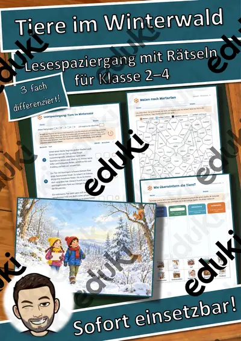
Lesespaziergang: Tiere im Winterwald – 3-fach differenziert (★/★★/★★★), Klasse 2–4

Lesespaziergang: Igel im Herbst – 3-fach differenziert (★/★★/★★★), Klasse 2–4
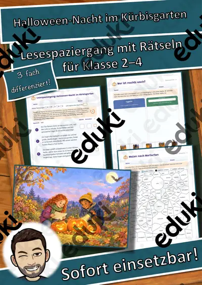
Lesespaziergang: Halloween-Nacht im Kürbisgarten – 3-fach differenziert (★/★★/★★★), Klasse 2–4

Fasching, Fastnacht und Karneval – Bräuche in der närrischen Zeit – Lesespurgeschichte mit Rätselaufgaben (Klasse 4)
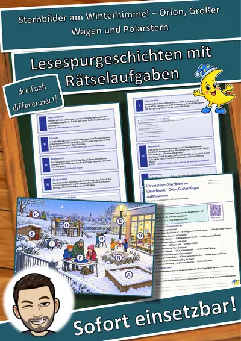
Sternbilder am Winterhimmel – Orion, Großer Wagen und Polarstern – Lesespurgeschichte mit Rätselaufgaben (Klasse 4)

Verkehrsschilder – Formen, Farben, Bedeutungen – Lesespurgeschichte mit Rätselaufgaben (Klasse 4)

Die Radfahrprüfung – Vorfahrt, Verkehrszeichen, sicheres Abbiegen – Lesespurgeschichte mit Rätselaufgaben (Klasse 4)

Die Samenreise – wie Pflanzen ihre Früchte verbreiten – Lesespurgeschichte mit Rätselaufgaben (Klasse 4)

Die Werft – Lesespurgeschichte mit Rätselaufgaben (Klasse 4)

Die Seenotrettungsstation – Lesespurgeschichte mit Rätselaufgaben (Klasse 4)

Die Eishalle – Lesespurgeschichte mit Rätselaufgaben (Klasse 4)

Das Aquarium – Lesespurgeschichte mit Rätselaufgaben (Klasse 4)

Die Kletterhalle – Lesespurgeschichte mit Rätselaufgaben (Klasse 4)

Die Fischzucht – Lesespurgeschichte mit Rätselaufgaben (Klasse 4)

Das Sägewerk – Lesespurgeschichte mit Rätselaufgaben (Klasse 4)

Die Nachtwanderung – Lesespurgeschichte mit Rätselaufgaben (Klasse 4)

Die Korbflechterei – Lesespurgeschichte mit Rätselaufgaben (Klasse 4)

Das Segelboot – Lesespurgeschichte mit Rätselaufgaben (Klasse 4)

Die Vogelbeobachtung – Lesespurgeschichte mit Rätselaufgaben (Klasse 4)

Die Sternwarte – Lesespurgeschichte mit Rätselaufgaben (Klasse 4)

Der Campingplatz – Lesespurgeschichte mit Rätselaufgaben (Klasse 4)

Das Fahrrad – Lesespurgeschichte mit Rätselaufgaben (Klasse 4)

Der Schmetterling – Lesespurgeschichte mit Rätselaufgaben (Klasse 4)

Der Marienkäfer – Lesespurgeschichte mit Rätselaufgaben (Klasse 4)

Die Spielzeugwerkstatt – Lesespurgeschichte mit Rätselaufgaben (Klasse 4)

Die Buchbinderei – Lesespurgeschichte mit Rätselaufgaben (Klasse 4)

Die Mosterei – Lesespurgeschichte mit Rätselaufgaben (Klasse 4)

Die Uhrmacherei – Lesespurgeschichte mit Rätselaufgaben (Klasse 4)

Die Seilerei – Lesespurgeschichte mit Rätselaufgaben (Klasse 4)

Die Hutmacherei – Lesespurgeschichte mit Rätselaufgaben (Klasse 4)

Die Ziegelei – Lesespurgeschichte mit Rätselaufgaben (Klasse 4)

Die Weberei – Lesespurgeschichte mit Rätselaufgaben (Klasse 4)

Die Glasbläserei – Lesespurgeschichte mit Rätselaufgaben (Klasse 4)

Die Schmiede – Lesespurgeschichte mit Rätselaufgaben (Klasse 4)

Die Imkerei – Lesespurgeschichte mit Rätselaufgaben (Klasse 4)

Die Fischerei – Lesespurgeschichte mit Rätselaufgaben (Klasse 4)

Die Töpferei – Lesespurgeschichte mit Rätselaufgaben (Klasse 4)

Der Obsthof – Lesespurgeschichte mit Rätselaufgaben (Klasse 4)

Die Mühle – Lesespurgeschichte mit Rätselaufgaben (Klasse 4)
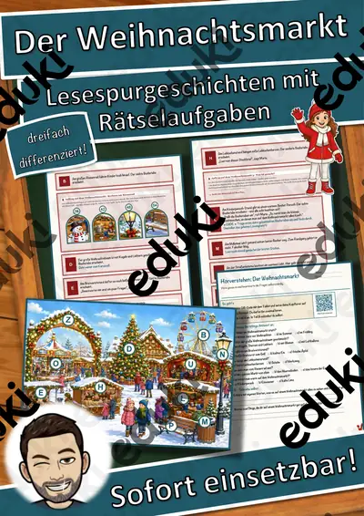
Der Weihnachtsmarkt – Lesespurgeschichte mit Rätselaufgaben (Klasse 4)

Die Wüste – Lesespurgeschichte mit Rätselaufgaben (Klasse 4)
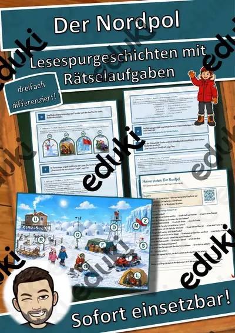
Der Nordpol – Lesespurgeschichte mit Rätselaufgaben (Klasse 4)

Die Tankstelle – Lesespurgeschichte mit Rätselaufgaben (Klasse 4)

Experimentierkartei Sachunterricht: 40 Versuche

Naturwerkstatt Grundschule Materialpaket: 3 Einheiten – Differenzierte Winterwerkstatt für Klasse 3 und 4 (Grundschule,
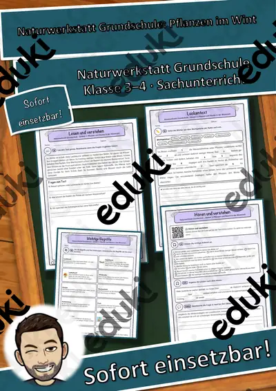
Naturwerkstatt Grundschule Naturwerkstatt Grundschule – Einheit 3: Pflanzen und Bäume in der Winterzeit – Differenzierte
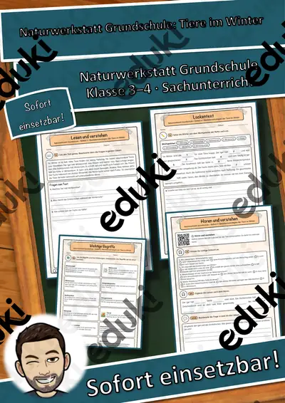
Naturwerkstatt Grundschule Naturwerkstatt Grundschule – Einheit 2: Überlebensstrategien der Tiere im Winter – Differenzi

Naturwerkstatt Grundschule Naturwerkstatt Grundschule – Einheit 1: Winterwetter, Schnee und Eis – Differenzierte Winterw

Strom und Magnete – Forscherheft mit Versuchen, Postern und Stromkreis-Werkstatt Kl. 3–4

Persönlichkeiten-Werkstatt: Helen Keller Steckbrief

Persönlichkeiten-Werkstatt: Rosa Parks – Steckbrief zum Lesen und Ausfüllen, Klasse 3–4 (kostenlos)

Persönlichkeiten-Werkstatt: Rosa Parks Plus-Paket

Persönlichkeiten-Werkstatt: Helen Keller Plus-Paket
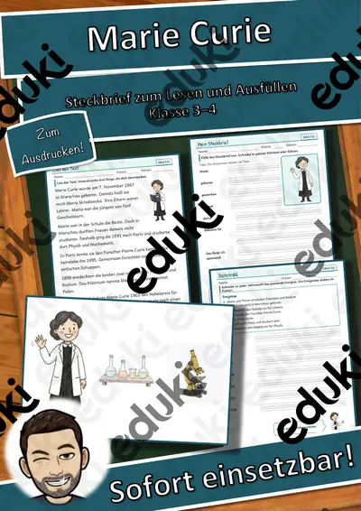
Persönlichkeiten-Werkstatt: Marie Curie – Steckbrief zum Lesen und Ausfüllen, Klasse 3–4 (kostenlos)

Persönlichkeiten-Werkstatt: Marie Curie Plus-Paket

Gruppenschilder Fuchs: Tierbande Klassentier mit Rollenkarten, Klasse 1–4

Gruppenschilder Eule: Tierbande Klassentier mit Rollenkarten, Klasse 1–4
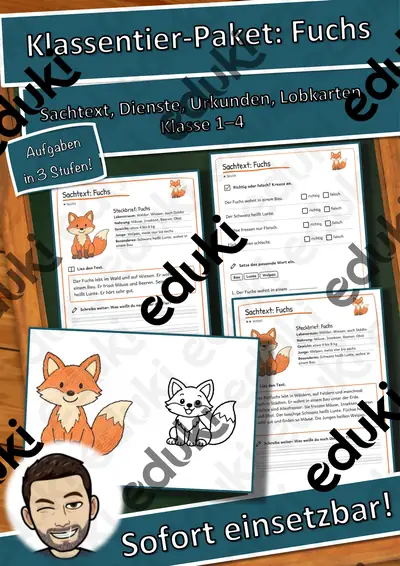
Klassentier-Paket Fuchs: Sachtext in 3 Stufen, Klassendienste, Lobkarten, Klasse 1–4

Klassentier-Paket Eule: Sachtext in 3 Stufen, Klassendienste, Lobkarten, Klasse 1–4
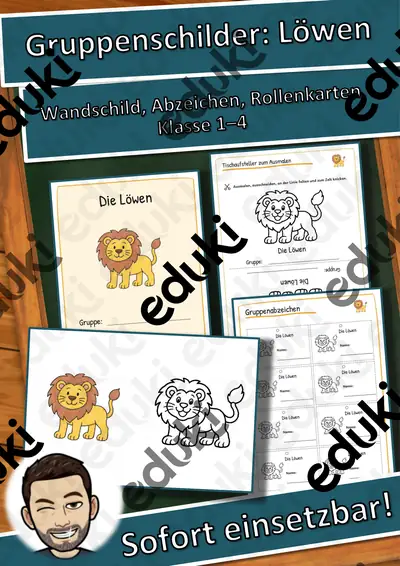
Gruppenschilder Löwe: Tierbande Klassentier mit Rollenkarten, Klasse 1–4

Klassentier-Paket Löwe: Sachtext in 3 Stufen, Klassendienste, Lobkarten, Klasse 1–4

Kontinente-Ausstellung Gesamtpaket – alle 7 Kontinente: Tafeln + differenzierte Arbeitsblätter, Klasse 2–4

Kontinente-Ausstellung Antarktis – 3 Tafeln + differenzierte Arbeitsblätter (★/★★/★★★), Klasse 2–4

Kontinente-Ausstellung Südamerika – 3 Tafeln + differenzierte Arbeitsblätter (★/★★/★★★), Klasse 2–4

Kontinente-Ausstellung Nordamerika – 3 Tafeln + differenzierte Arbeitsblätter (★/★★/★★★), Klasse 2–4

Kontinente-Ausstellung Europa – 3 Tafeln + differenzierte Arbeitsblätter (★/★★/★★★), Klasse 2–4

Kontinente-Ausstellung Asien – 3 Tafeln + differenzierte Arbeitsblätter (★/★★/★★★), Klasse 2–4

Kontinente-Ausstellung Afrika – 3 Tafeln + differenzierte Arbeitsblätter (★/★★/★★★), Klasse 2–4

Kontinente-Ausstellung Ozeanien – 3 Tafeln + differenzierte Arbeitsblätter (★/★★/★★★), Klasse 2–4
Lauschtour – Hörrätsel mit QR-Code und Hör-Bingo, GRATIS-Sampler zu Geräuschen (Klasse 2–4)
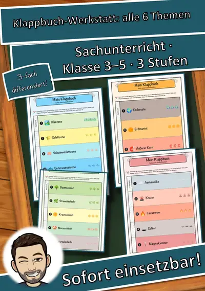
Klappbuch-Werkstatt Sachunterricht – Gesamtpaket: alle 6 Klappbücher in 3 Stufen (Klasse 3–5)

Klappbuch-Werkstatt: Wie ein Vulkan aufgebaut ist – Sachunterricht, 3 Stufen & Kurztest (Klasse 3–5)

Klappbuch-Werkstatt: Die Erde und ihre Schalen – Sachunterricht, 3 Stufen & Kurztest (Klasse 3–5)

Klappbuch-Werkstatt: Der Teich und seine Zonen – Sachunterricht, 3 Stufen & Kurztest (Klasse 3–5)

Hörwerkstatt Geräusche: Geräusche in Natur und Wetter – Hörstation, 3 Stufen & Test (Klasse 2–4)

Hörwerkstatt Geräusche: Geräusche unterwegs – Hörstation, 3 Stufen & Test (Klasse 2–4)

Klappbuch-Werkstatt: Aufbau einer Blütenpflanze – Sachunterricht, 3 Stufen & Kurztest (Klasse 3–5)

Klappbuch-Werkstatt: Schichten unter unseren Füßen – Sachunterricht, 3 Stufen & Kurztest (Klasse 3–5)

Hörwerkstatt Geräusche: Geräusche zu Hause – Hörstation, 3 Stufen & Test (Klasse 2–4)

Klappbuch-Werkstatt: Der Wald von oben nach unten – Sachunterricht, 3 Stufen & Kurztest (Klasse 3–5)

Mein Recht im Alltag Materialpaket: 3 Einheiten – Alltag den Kinderrechten zuordnen und selbst reflektieren (Grundschule

Mein Recht im Alltag Mitreden statt zuhören: Mein Recht auf Beteiligung – Alltag den Kinderrechten zuordnen und selbst r

Mein Recht im Alltag Sicher groß werden: Schutz vor Gewalt und meine Privatsphäre – Alltag den Kinderrechten zuordnen un
Mein Recht im Alltag Spielen und Toben im Herbst: Mein Recht auf Freizeit – Alltag den Kinderrechten zuordnen und selbst

Materialpaket Winter-Lesespaziergänge für Klasse 2–4: 5 Lesespaziergänge mit Rätseln, 3-fach differenziert (Winterwald, Spuren im Schnee, Plätzchen & mehr)

Persönlichkeiten-Kartei Astronomie und Raumfahrt – Lesekartei mit 22 Persönlichkeiten, 3-fach differenziert (Klasse 3–6)

Suchspiel (Suchsel) Hauptstädte Bundesländer (Buchstabengitter) #demokratiestärken

Sonnensystem - Materialpaket Sonnensystem

Steckbrief Neptun - Sonnensystem (Neptun)

Steckbrief Uranus - Sonnensystem (Uranus)

Steckbrief Saturn - Sonnensystem (Saturn)

Steckbrief Jupiter - Sonnensystem (Jupiter)

Steckbrief Mars - Sonnensystem (Mars)

Steckbrief Erde - Sonnensystem (Erde)

Steckbrief Sonne - Sonnensystem (Sonne)

Steckbrief Buche (Baum/Bäume)

Steckbrief Pappel (Baum/Bäume)

Steckbrief Erle (Baum/Bäume)

Steckbrief Eiche (Baum/Bäume)

Steckbrief Birke (Baum/Bäume)

Steckbrief Ahorn (Baum/Bäume)
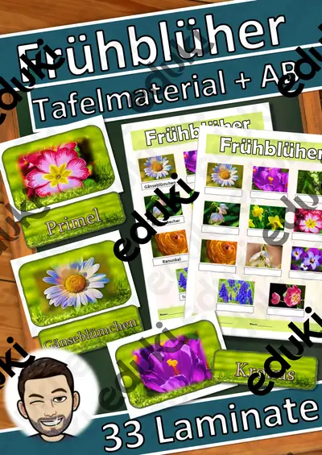
Frühblüher Materialpaket - Frühblüher

Gemüse - Merk es dir!

Tafelmaterial Steinzeit
Keine Materialien gefunden – versuch einen anderen Suchbegriff oder Filter.